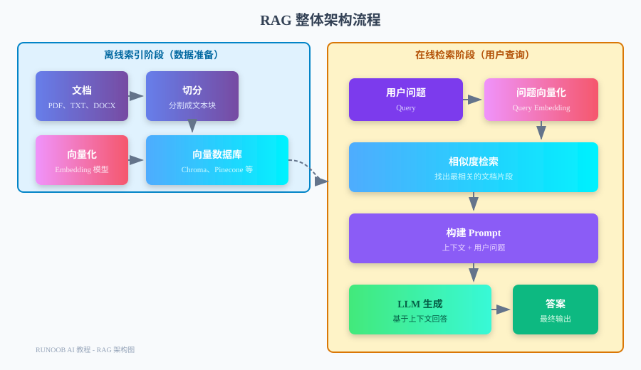

Retrieval-Augmented Generation
Have you ever encountered a scenario like this:
You have a product manual that’s hundreds of pages long, and a user asks a very specific question. You search for a long time but can’t find where the answer is.
-
Your company has accumulated several years of internal documents, meeting minutes, and technical specifications. New employees who want to understand a particular business rule have no idea where to even start looking.
-
You have a pile of ebooks, research reports, and papers, and you want AI to answer questions based on this content, but if you paste the entire book directly to AI, the context window won't fit it.
This is the problem RAG aims to solve.
RAG (Retrieval-Augmented Generation) is a technology that enables large language models to answer questions based on specific knowledge bases.。
The core idea of RAG is simple: first retrieve the most relevant content from your knowledge base, then send that content together with the user's question to the LLM, and let the LLM answer based on this context.
Without RAG, the LLM only knows what's in its training data; with RAG, the LLM can use your private, up-to-date data.
Why is RAG needed?
RAG is not the only solution to these problems, but it is currently one of the most practical and lowest-cost options.
LLM knowledge cutoff issue.
-
All LLMs have a knowledge cutoff date—the training data only goes up to a certain point in time, and it doesn't know about events after that.
-
For example, GPT-4's knowledge cutoff is October 2023. If you ask it about news from 2024, it can only say 'I don't know.'
-
More importantly, your private data (internal documents, product manuals, company policies) has never appeared in the LLM's training data—how could it possibly know?
Private data cannot be directly input into an LLM.
You might think: can't I just paste the documents directly into the LLM?
The answer is: short documents work, but long documents don't.
-
First, the LLM's context window is limited. For example, GPT-3.5 only has 16K tokens, roughly 10,000 characters. A manual of several hundred pages simply won't fit.
-
Second, even if the context window is large enough, stuffing the entire document in doesn't work well. LLMs tend to get lost in long text and fail to find the truly relevant information.
-
Finally, there's the cost. GPT-4 with a 128K context costs $10 per million input tokens. If you stuff a whole book in every time, your wallet will cry.
RAG vs Fine-tuning: How to Choose
Another way to give an LLM new data is fine-tuning—continuing to train the model with new data.
But fine-tuning and RAG are fundamentally different, with entirely different use cases:
| Comparison item | RAG | Fine-tuning |
|---|---|---|
| Data freshness | Can be updated at any time, immediately usable | Requires retraining, long cycle |
| Applicable data volume | Very large (millions of documents) | Medium (thousands to tens of thousands of samples) |
| Citation source | Can show which document the answer comes from | Cannot trace the source |
| Hallucination problem | Reduces hallucinations by providing context | May still hallucinate |
| Modifying knowledge | Simply delete or update documents | Requires retraining, hard to 'forget' |
| Technical barrier | Relatively low, can use existing frameworks | Relatively high, requires GPU and training experience |
| Cost | Mainly vector database and Embedding | High training cost, and high inference cost as well |
A simple rule of thumb: if you want the LLM to "know" certain factual knowledge (such as product descriptions, company policies), use RAG; if you want the LLM to "learn" a certain style or capability (such as writing style, code conventions), use fine-tuning.
RAG Architecture Overview
RAG is divided into two phases: the offline indexing phase and the online retrieval phase.
First, let's look at a complete architecture diagram:

Offline indexing stage (data preparation)
This phase runs in the background, and users won't see it directly.
Its task is to process your documents into a format that can be quickly retrieved.
The steps are as follows:
-
1. Document loading: Read documents in various formats such as PDF, TXT, DOCX, and web pages.
-
2. Document splitting: Split long documents into smaller text chunks, usually a few hundred to a thousand words.
-
3. Vectorization: Use an Embedding model to convert each text chunk into a vector (a string of numbers).
-
4. Storage: Store the vectors and original text together in a vector database.
This phase only needs to be done once, or rerun when documents are updated.
Online retrieval stage (user query)
This phase happens in real time when the user asks a question.
The steps are as follows:
1. Question vectorization: Use the same Embedding model to convert the user's question into a vector as well.
-
2. Similarity retrieval: Find the text chunks closest to the question vector in the vector database.
-
3. Build Prompt: Use the retrieved text chunks as context, and assemble them together with the user's question into a Prompt.
-
4. LLM generation: Send the Prompt to the LLM, and let it answer based on the context.
-
5. Return the answer: Return the LLM's answer to the user, usually along with the cited document sources.
Introduction to Vector Databases
The vector database is one of the core components of RAG. To understand it, you first need to understand what a vector is.
What is a vector (Embedding)?
A vector (Embedding) is a string of numbers converted from text.
For example, the word "cat" might be converted into a vector with several hundred dimensions like [0.23, -0.45, 0.12, 0.89, ...].
The key point is:Texts with similar semantics will have vectors that are close together in space.。
For example:
- The vector distance between "cat" and "kitty" is very close.
- The vector distance between "cat" and "dog" is closer than between "cat" and "car".
- The vector distance between "I like cats" and "I love cats" is very close.
This is the foundation for "semantic search" — matching by meaning, not by keyword.
The computational principle of semantic similarity.
The similarity of two vectors is usually calculated using "cosine similarity".
The range of cosine similarity is -1 to 1:
- 1 means exactly the same
- 0 means unrelated
- -1 means completely opposite
In practice, we usually only care about positive similarity; the closer to 1, the more relevant.
When you ask a question, the vector database quickly computes the similarity between the question vector and all document vectors, returning the most relevant top few.
Mainstream vector database
There are many vector databases on the market, each with its own characteristics:
| Database | Type | Features | Use cases |
|---|---|---|---|
| Chroma | Local/Open source | Lightweight, easy to use, Python-friendly | Prototyping, small-scale applications |
| Pinecone | Cloud service/SaaS | Managed service, no operations required, elastic scaling | Production environments, large-scale applications |
| Weaviate | Open source/Managed | Feature-rich, supports GraphQL | Scenarios requiring advanced features |
| Qdrant | Open source/Managed | High performance, written in Rust | Scenarios with high performance requirements |
| Milvus | Open source/Managed | Comprehensive features, enterprise-grade | Large-scale enterprise applications |
| FAISS | Local library | From Facebook, extremely fast | Scenarios where persistence is not needed |
For beginners, we recommend starting with Chroma — it is easy to install, requires no extra configuration, and is very suitable for learning and prototyping.
Document Processing Workflow
Document processing is a step in RAG that is easily overlooked but actually very important.
Whether your retrieval works well depends largely on how well the documents are processed.
Supported document formats.
LangChain supports many document formats:
- Plain text: .txt, .md
- PDF：.pdf
- Office：.docx, .pptx, .xlsx
- Web pages: HTML, URL
- Code: .py, .js, .java, etc.
- JSON：.json, .jsonl
- CSV：.csv
Each format has a corresponding loader, making it very convenient to use.
Document segmentation strategy
Document chunking is the process of splitting long documents into smaller pieces.
This looks simple, but there are many nuances:
- Too small: may lose context, a complete meaning gets cut off
- Too large: may contain irrelevant information, wasting the context window
Common chunking strategies:
| Strategy | Principle | Applicable scenarios |
|---|---|---|
| By character count | Simply split by character count, e.g., every 500 characters per chunk | Simple scenarios with low context requirements |
| By paragraph | Split by newline characters, keeping paragraphs as intact as possible | Well-formatted documents |
| Recursive chunking | Prefer paragraphs first, then sentences if too long, and finally words | The first choice for most scenarios |
| Semantic chunking | Split based on semantic similarity to ensure semantic completeness | Scenarios with high semantic requirements |
In most cases, using LangChain's RecursiveCharacterTextSplitter is sufficient.
Tips for choosing the segmentation size
Chunk Size is a parameter that needs to be adjusted according to the scenario.
Some reference guidelines:
- QA scenarios: 500-1000 characters, enough to contain a complete question-answer pair
- Summarization scenarios: 1000-2000 characters, more context is needed
- Code scenarios: can split by function or class, keeping code blocks intact
There is also an important parameter: Overlap — the number of characters overlapped between adjacent text chunks.
Overlap can prevent important information from being split across two chunks, usually set to 10%-20% of the chunk size.
Don't blindly chase "optimal" chunking parameters. Start with 500 characters and 50 overlap, test the actual results, then adjust.
Embedding Model
An embedding model is a model that converts text into vectors.
Its quality directly affects retrieval performance — a good embedding model can accurately understand semantics and rank relevant documents higher.
What is an embedding model?
An Embedding model is a pretrained neural network that takes text as input and outputs vectors.
Its training objective is: for texts with similar semantics, the output vectors should also be similar.
For example:
- "How to learn Python" and "Python learning methods" → vectors are close
- "Cats are cute" and "Puppies are cute" → vectors are somewhat distant but still relatively close
- "How to learn Python" and "Cats are cute" → vector distance is very far
OpenAI text-embedding-3 series
OpenAI provides the most popular embedding models currently:
| Model | Dimensions | Price (per million tokens) | Features |
|---|---|---|---|
| text-embedding-3-small | 1536 | $0.02 | High cost-effectiveness, sufficient for most scenarios |
| text-embedding-3-large | 3072 | $0.13 | Better performance, suitable for high-precision needs |
text-embedding-3-small is currently the top choice—it performs better than the previous generation text-embedding-ada-002 and is cheaper.
Open-source Embedding Model
If you don't want to use OpenAI, or have data privacy requirements, there are also many open-source options:
| Model | Dimensions | Features |
|---|---|---|
| sentence-transformers/all-MiniLM-L6-v2 | 384 | Lightweight, fast, decent performance |
| sentence-transformers/all-mpnet-base-v2 | 768 | Better performance, but slower and larger |
| BAAI/bge-large-zh-v1.5 | 1024 | Optimized specifically for Chinese |
| Alibaba-NLP/gte-large-zh | 1024 | Made by Alibaba, good Chinese performance |
For Chinese scenarios, we recommend the BAAI/bge series or Alibaba-NLP/gte series—they are specifically optimized for Chinese and perform better than general-purpose models.
Retrieval strategy
Retrieval is not as simple as "find the most relevant documents"—different strategies suit different scenarios.
Vector similarity search
This is the most common retrieval method: compute the similarity between the question vector and all document vectors, and return the top K most relevant ones.
Advantages: understands semantics, synonyms and near-synonyms can all be matched.
Disadvantages: may be less accurate than keyword retrieval for precise terms and proper nouns.
For example, if a user asks "runoob's Python tutorial", vector retrieval can understand that "tutorial" and "course" are similar, but if the user asks "runoob Python3.10 documentation", keyword search may be more accurate.
Keyword search (BM25)
This is the method used by traditional search engines: match keywords and score based on term frequency, inverse document frequency, etc.
-
Advantages: effective for exact matching of terms, product names, model numbers, etc.
-
Disadvantages: cannot understand synonyms or semantic relationships.
For example, if a user asks how to learn programming, keyword retrieval can only find documents containing "programming" and cannot find documents that say "writing code" but mean the same thing.
Hybrid Search
Since both methods have their pros and cons, why not use them together?
Hybrid search performs both vector retrieval and keyword retrieval simultaneously, then merges and re-ranks the results.
This way, it can leverage semantic understanding while ensuring exact matching.
Many vector databases support hybrid search, such as Weaviate, Pinecone, Qdrant, etc.
If you're not sure which one to use, choose hybrid search—in most cases, it works best.
Generation phase optimization
Retrieving relevant documents is only the first step. There are also many techniques for getting the LLM to generate good answers based on those documents.
Prompt template design
The prompt template is a key factor affecting output quality in RAG.
A good RAG prompt usually includes:
- Role setting: tell the LLM what role it is
- Context: the retrieved document content
- Task description: what to make the LLM do
- Constraints: for example, "answer only based on the context" and "if you don't know, say you don't know"
- Output format: how you want the LLM to answer
A classic template:
Example
RAG_PROMPT_TEMPLATE = """You are a professional {role}.
Please answer the user's question based on the following context. If the context does not contain relevant information, say "Sorry, I could not find relevant information."
Context:
{context}
User question: {question}
Please answer in concise and accurate language: """
How to reduce hallucinations?
Hallucination is the phenomenon where an LLM fabricates facts—it can sound very convincing, but it's all made up.
RAG can reduce hallucinations, but cannot completely eliminate them.
Some techniques for reducing hallucinations:
- Emphasize "answer only based on the context" in the prompt
- Have the LLM cite excerpts from the original text in its answers
- If the retrieval results are irrelevant, have the LLM say "I don't know"
- Use multiple LLMs to cross-validate answers
- Have the LLM first find relevant content from the context, then answer
Source citation annotation
It's important to let users know where the answer comes from—this not only increases credibility but also makes it easier for users to verify.
Common practices:
- Mark the source in the answer, e.g., "according to Document A, page 2"
- List the titles and links of reference documents at the end of the answer
- Allow users to click and jump to the original text location
Some advanced frameworks in LangChain (such as LlamaIndex) can do this automatically for you.
Hands-On: Building a Document Q&A System Based on LangChain
Enough talk—let's get hands-on and build a complete RAG system.
We will use LangChain + Chroma + OpenAI to build a document Q&A system.
Environment setup
First install the required libraries:
pip install langchain langchain-openai langchain-chroma python-dotenv
Then create a .env file in the project directory and fill in your OpenAI API Key:
OPENAI_API_KEY=你的-api-key-在这里
Complete code implementation
This is a complete RAG system, including index creation and query functionality:
Example
# Complete implementation of RAG document Q&A system
# ============================================
import os
from dotenv import load_dotenv
from langchain.text_splitter import RecursiveCharacterTextSplitter
from langchain_openai import OpenAIEmbeddings
from langchain_chroma import Chroma
from langchain_openai import ChatOpenAI
from langchain.chains import RetrievalQA
from langchain.prompts import PromptTemplate
from langchain.schema import Document
def load_documents_from_directory(directory: str) -> list[Document]:
"""Load documents from directory
For demonstration purposes, we manually create some documents
In actual projects, you can use DirectoryLoader to load real files
"""
documents = [
Document(
page_content="""The RUNOOB tutorial website was founded in 2013, created by the Rookie Tutorial team.
The website aims to provide easy-to-understand programming tutorials for programming beginners.
We provide tutorials for multiple programming languages including HTML, CSS, JavaScript, Python, Java, C++, and more.""",
metadata={"source": "runoob_intro.txt", "page": 1}
),
Document(
page_content="""RUNOOB's Python tutorial covers all important knowledge points of Python.
Including: Python basic syntax, data types, control statements, functions, modules, file operations, etc.
The tutorial provides a large number of code examples, each carefully designed and tested.
We also provide an online Python editor, allowing you to run code directly in your browser.""",
metadata={"source": "python_tutorial.txt", "page": 1}
),
Document(
page_content="""RUNOOB tutorials are characterized by concise content, rich examples, and a focus on practice.
We believe that "the best way to learn programming is to write code."
Therefore, each knowledge point comes with runnable code examples, so you can learn and practice at the same time.
Our tutorials are completely free, and anyone can access and learn.""",
metadata={"source": "features.txt", "page": 1}
),
Document(
page_content="""In addition to text tutorials, RUNOOB also provides video tutorials.
Video tutorials are more intuitive and suitable for visual learners.
Our video tutorials cover popular topics such as Python, Web development, data analysis, and more.
You can find our videos on Bilibili and YouTube.""",
metadata={"source": "video_course.txt", "page": 1}
),
]
print(f"Loaded {len(documents)} documents")
return documents
def split_documents(documents: list[Document], chunk_size: int = 500, chunk_overlap: int = 50) -> list[Document]:
"""Split documents"""
text_splitter = RecursiveCharacterTextSplitter(
chunk_size=chunk_size,
chunk_overlap=chunk_overlap,
length_function=len,
separators=["\n\n", "\n", "。", "！", "？", "，", " ", ""],
)
splits = text_splitter.split_documents(documents)
print(f"Split {len(documents)} documents into {len(splits)} text chunks")
return splits
def create_vector_store(splits: list[Document], persist_directory: str = "./chroma_db") -> Chroma:
"""Create vector database"""
embeddings = OpenAIEmbeddings(model="text-embedding-3-small")
vector_store = Chroma.from_documents(
documents=splits,
embedding=embeddings,
persist_directory=persist_directory,
)
print(f"Vector database created, with a total of {vector_store._collection.count()} records")
return vector_store
def load_vector_store(persist_directory: str = "./chroma_db") -> Chroma:
"""Load existing vector database"""
embeddings = OpenAIEmbeddings(model="text-embedding-3-small")
vector_store = Chroma(
persist_directory=persist_directory,
embedding_function=embeddings,
)
print(f向量数据库已加载，共 {vector_store._collection.count()} 条记录)
return vector_store
def create_rag_chain(vector_store: Chroma):
"""Create RAG Q&A chain"""
# Custom Prompt template
template = """You are a professional RUNOOB customer service assistant.
Please answer the user's question based on the following context. If the context does not contain relevant information, say "Sorry, I did not find relevant information."
Keep the answer concise and clear, using Chinese.
Context:
{context}
User question: {question}
Answer: """
prompt = PromptTemplate(
template=template,
input_variables=["context", "question"],
)
llm = ChatOpenAI(model="gpt-3.5-turbo", temperature=0)
# Create retrieval chain
rag_chain = RetrievalQA.from_chain_type(
llm=llm,
chain_type="stuff",
retriever=vector_store.as_retriever(search_kwargs={"k": 3}),
chain_type_kwargs={"prompt": prompt},
return_source_documents=True,
)
return rag_chain
def main():
"""Main function"""
# Load environment variables
load_dotenv()
# Check if database already exists
db_exists = os.path.exists("./chroma_db") and os.path.isdir("./chroma_db")
if db_exists:
print("Found existing database, loading...")
vector_store = load_vector_store()
else:
print("Creating new database...")
# 1. Load documents
docs = load_documents_from_directory("./data")
# 2. Split documents
splits = split_documents(docs)
# 3. Create vector database
vector_store = create_vector_store(splits)
# 4. Create RAG chain
rag_chain = create_rag_chain(vector_store)
# 5. Test queries
test_questions = [
"When was RUNOOB founded?",
"What are the features of RUNOOB's Python tutorial?",
"Does RUNOOB have video tutorials?",
"How to learn C++ on RUNOOB?",
"Do RUNOOB's tutorials require payment?",
]
for question in test_questions:
print(f"\n{'='*60}")
print(f"Question: {question}")
print(f"{'='*60}")
result = rag_chain.invoke({"query": question})
answer = result["result"]
sources = result["source_documents"]
print(f"Answer: {answer}")
print("\nReference sources:")
for i, doc in enumerate(sources, 1):
print(f" [{i}] {doc.metadata['source']} (page {doc.metadata['page']})")
print(f" Snippet: {doc.page_content[:50]}...")
if __name__ == "__main__":
main()
Running this program, you will see output similar to this:
创建新的数据库...
已加载 4 个文档
已将 4 个文档切分为 4 个文本块
向量数据库已创建，共 4 条记录
============================================================
问题：RUNOOB 是什么时候创立的？
============================================================
回答：RUNOOB 教程网站创立于 2013 年。
参考来源：
[1] runoob_intro.txt (第 1 页)
片段：RUNOOB 教程网站创立于 2013 年，由菜鸟教程团队创建。...
[2] features.txt (第 1 页)
片段：除了文字教程，RUNOOB 还提供了视频教程。...
============================================================
问题：RUNOOB 的 Python 教程有什么特点？
============================================================
回答：RUNOOB 的 Python 教程涵盖了 Python 的所有重要知识点，包括基础语法、数据类型、控制语句、函数、模块、文件操作等，并且提供了大量经过精心设计和测试的代码示例，还提供了在线 Python 编辑器，可以直接在浏览器中运行代码。
参考来源：
[1] python_tutorial.txt (第 1 页)
片段：RUNOOB 的 Python 教程涵盖了 Python 的所有重要知识点。...
[2] features.txt (第 1 页)
片段：RUNOOB 教程的特点是内容简洁、示例丰富、注重实践。...
Congratulations! You have successfully built a complete RAG document Q&A system.
Advanced Optimization: Re-ranking, HyDE
Basic RAG works, but if you want better results, you can try these advanced optimization methods.
Re-ranking
The results returned by vector retrieval are sorted by similarity, but high similarity does not necessarily mean it is the most suitable answer to the question.
Re-ranking means: first use vector retrieval to return the top K results (e.g., 20), then use a more precise model to re-rank these results, and select the best few to send to the LLM.
Common Re-ranking models:
- cross-encoder/ms-marco-MiniLM-L-6-v2
- BAAI/bge-reranker-large
Although it adds an extra step, the improvement in results is obvious and worth doing.
HyDE（Hypothetical Document Embedding）
HyDE is a clever idea: first use the LLM to generate a "hypothetical answer" for the user's question, then use this hypothetical answer for retrieval.
Why is this effective? Because questions are usually short and have low information density; while hypothetical answers are longer, more document-like in style, and have higher similarity to real documents.
For example:
- User question: "When was RUNOOB founded?"
- Hypothetical answer: "The RUNOOB tutorial website was founded in 2013, created by the Rookie Tutorial team, aiming to provide quality tutorials for programming beginners."
Using the hypothetical answer for retrieval often finds more relevant documents.
Other extensions
Click me to share notes.
<p style="font-size:14px;">Notes must be an extension of the content of this article!</p><br> <p style="font-size:12px;"><a href="../tougao.html" target="_blank">Article submission, click here</a></p> <p style="font-size:14px;"><a href="../w3cnote/runoob-user-test-intro.html" target="_blank">How to get registration invitation code</a></p> <h3 class="text-muted"><i class="fa fa-info-circle" aria-hidden="true"></i> You must <a href=";.html" class="runoob-pop">log in</a> before sharing notes!</h3> <p><a href="../w3cnote/runoob-user-test-intro.html" target="_blank">How to get registration invitation code</a></p>